import tensorflow as tf
# Make sure the GPU is enabled
assert tf.config.list_physical_devices('GPU'), 'Start the colab kernel with GPU: Runtime -> Change runtime type -> GPU'
import tensorflow_hub as hub
import joblib
import gzip
import kipoiseq
from kipoiseq import Interval
import pyfaidx
import pandas as pd
import numpy as np
import matplotlib.pyplot as plt
import matplotlib as mpl
import seaborn as sns
%matplotlib inline
%config InlineBackend.figure_format = 'retina'
transform_path = 'gs://dm-enformer/models/enformer.finetuned.SAD.robustscaler-PCA500-robustscaler.transform.pkl'
model_path = 'https://tfhub.dev/deepmind/enformer/1'
fasta_file = '/home/s1mi/enformer_rat_data/reference_genome/hg38_genome.fasta'We are trying to debug low correlation values between predicted reference CAGE values and reference observed gene expression by inspecting a few genes.
Select Genes
annot_df = pd.read_csv("/home/s1mi/enformer_rat_data/annotation/hg38.protein_coding_TSS.txt", sep="\t")
genes = annot_df.sample(n=10)Run Enformer at the TSS
Code
SEQUENCE_LENGTH = 393216
class Enformer:
def __init__(self, tfhub_url):
self._model = hub.load(tfhub_url).model
def predict_on_batch(self, inputs):
predictions = self._model.predict_on_batch(inputs)
return {k: v.numpy() for k, v in predictions.items()}
@tf.function
def contribution_input_grad(self, input_sequence,
target_mask, output_head='human'):
input_sequence = input_sequence[tf.newaxis]
target_mask_mass = tf.reduce_sum(target_mask)
with tf.GradientTape() as tape:
tape.watch(input_sequence)
prediction = tf.reduce_sum(
target_mask[tf.newaxis] *
self._model.predict_on_batch(input_sequence)[output_head]) / target_mask_mass
input_grad = tape.gradient(prediction, input_sequence) * input_sequence
input_grad = tf.squeeze(input_grad, axis=0)
return tf.reduce_sum(input_grad, axis=-1)
def plot_tracks(tracks, interval, height=1.5):
fig, axes = plt.subplots(len(tracks), 1, figsize=(20, height * len(tracks)), sharex=True)
for ax, (title, y) in zip(axes, tracks.items()):
ax.fill_between(np.linspace(interval.start, interval.end, num=len(y)), y)
ax.set_title(title)
sns.despine(top=True, right=True, bottom=True)
ax.set_xlabel(str(interval))
plt.tight_layout()
class FastaStringExtractor:
def __init__(self, fasta_file):
self.fasta = pyfaidx.Fasta(fasta_file)
self._chromosome_sizes = {k: len(v) for k, v in self.fasta.items()}
def extract(self, interval: Interval, **kwargs) -> str:
# Truncate interval if it extends beyond the chromosome lengths.
chromosome_length = self._chromosome_sizes[interval.chrom]
trimmed_interval = Interval(interval.chrom,
max(interval.start, 0),
min(interval.end, chromosome_length),
)
# pyfaidx wants a 1-based interval
sequence = str(self.fasta.get_seq(trimmed_interval.chrom,
trimmed_interval.start + 1,
trimmed_interval.stop).seq).upper()
# Fill truncated values with N's.
pad_upstream = 'N' * max(-interval.start, 0)
pad_downstream = 'N' * max(interval.end - chromosome_length, 0)
return pad_upstream + sequence + pad_downstream
def close(self):
return self.fasta.close()
def one_hot_encode(sequence):
return kipoiseq.transforms.functional.one_hot_dna(sequence).astype(np.float32)model = Enformer(model_path)
fasta_extractor = FastaStringExtractor(fasta_file)## Create Interval object for each TSS
intervals = [kipoiseq.Interval('chr'+ row['chromosome_name'], row['transcription_start_site'], row['transcription_start_site'])
for _, row in genes.iterrows()]tss_predictions = {}
for index, gene in enumerate(genes['ensembl_gene_id']):
tss = intervals[index]
sequence_one_hot = one_hot_encode(fasta_extractor.extract(tss.resize(SEQUENCE_LENGTH)))
tss_predictions[gene] = model.predict_on_batch(sequence_one_hot[np.newaxis])['human'][0]Query Predicted Reference Epigenome at the TSS
Code
import h5py
enfref_dir = "/grand/TFXcan/imlab/users/lvairus/reftile_project/enformer-reference-epigenome"
def query_epigenome(chr_num, center_bp, num_bins=3, tracks=-1):
"""
Parameters:
path_to_enfref (str): path to the directory containing the concatenated reference enformer files
chr_num (int/string): chromosome number
center_bp (int): center base pair position (1-indexed)
num_bins (int): number of bins to extract centered around center_bp (default: 896)
note: if the number of bins is even, the center bin will be in the second half of the array
tracks (int list): list of tracks to extract (default: all 5313 tracks)
Returns:
epigen (np.array): enformer predictions centered at center_bp of shape (num_bins, len(tracks))
"""
# from position choose center bin
center_ind = center_bp - 1
center_bin = center_ind // 128
half_bins = num_bins // 2
start_bin = center_bin - half_bins
end_bin = center_bin + half_bins
if num_bins % 2 != 0: # if num_bins is odd
end_bin += 1
with h5py.File(f"{enfref_dir}/chr{chr_num}_cat.h5", "r") as f:
# get tracks if list provided
if tracks == -1:
epigen = f[f'chr{chr_num}'][start_bin:end_bin, :]
else:
epigen = f[f'chr{chr_num}'][start_bin:end_bin, tracks]
return epigenpredicted_reference_epigenome = {}
for index, gene in enumerate(genes['ensembl_gene_id']):
chr = genes.iloc[index]['chromosome_name']
pos = genes.iloc[index]['transcription_start_site']
predicted_reference_epigenome[gene] = query_epigenome(chr, pos, num_bins=896)We’ll save these matrices so we can come back to the same genes.
# with h5py.File('/home/s1mi/enformer_rat_data/output/hg38_tss_predictions.h5', 'w') as hf:
# for key, value in tss_predictions.items():
# hf[key] = value
# with h5py.File('/home/s1mi/enformer_rat_data/output/hg38_reference_epigenome_tss.h5', 'w') as hf:
# for key, value in predicted_reference_epigenome.items():
# hf[key] = valueimport h5py
import kipoiseq
from kipoiseq import Interval
import pandas as pd
import numpy as np
import matplotlib.pyplot as plt
import matplotlib as mpl
import seaborn as sns
annot_df = pd.read_csv("/home/s1mi/enformer_rat_data/annotation/hg38.protein_coding_TSS.txt", sep="\t", index_col='ensembl_gene_id')predicted_reference_epigenome = {}
with h5py.File('/home/s1mi/enformer_rat_data/output/hg38_reference_epigenome_tss.h5', 'r') as hf:
for key in hf.keys():
predicted_reference_epigenome[key] = hf[key][()]
tss_predictions = {}
with h5py.File('/home/s1mi/enformer_rat_data/output/hg38_tss_predictions.h5', 'r') as hf:
for key in hf.keys():
tss_predictions[key] = hf[key][()]Compare Matrices
I used Laura’s matrix comparison functions, which can be expanded below:
Code
def get_diffmat(mat1, mat2):
diffmat = mat1 - mat2
colwise_maxes1 = np.max(mat1, axis=0)
colwise_maxes2 = np.max(mat2, axis=0)
colwise_maxes_maxes = np.maximum(colwise_maxes1, colwise_maxes2)
relmax3_diffmat = diffmat / colwise_maxes_maxes
relmax3_diffmat = np.abs(relmax3_diffmat)
return relmax3_diffmat
def get_summary(arr):
summary = {
"mean": np.mean(arr),
"median": np.median(arr),
"minimum": np.min(arr),
"maximum": np.max(arr),
"q1": np.percentile(arr, 25),
"q3": np.percentile(arr, 75),
}
return summary
def plot_hist(arr, bin_num, xlab='Value', ylab='Frequency', title='Histogram'):
plt.hist(arr, bins=bin_num)
plt.title(title)
plt.xlabel(xlab)
plt.ylabel(ylab)
plt.show()diff_mats = {gene: get_diffmat(tss_predictions[gene], predicted_reference_epigenome[gene]) for gene in tss_predictions.keys()}
for gene in diff_mats.keys():
print(gene, "summary:\n", get_summary(diff_mats[gene]))ENSG00000014257 summary:
{'mean': 0.10938877, 'median': 0.04974805, 'minimum': 0.0, 'maximum': 1.0, 'q1': 0.010111116105690598, 'q3': 0.1516108550131321}
ENSG00000047457 summary:
{'mean': 0.08590854, 'median': 0.03547225, 'minimum': 0.0, 'maximum': 0.99996144, 'q1': 0.007081934134475887, 'q3': 0.11259441636502743}
ENSG00000070193 summary:
{'mean': 0.026367702, 'median': 0.010873516, 'minimum': 0.0, 'maximum': 0.985605, 'q1': 0.002833168429788202, 'q3': 0.031836215406656265}
ENSG00000085999 summary:
{'mean': 0.07470728, 'median': 0.021258086, 'minimum': 0.0, 'maximum': 0.99999213, 'q1': 0.0033360121306031942, 'q3': 0.08667697757482529}
ENSG00000116685 summary:
{'mean': 0.08169045, 'median': 0.022225916, 'minimum': 2.8047395e-10, 'maximum': 0.999989, 'q1': 0.003913101390935481, 'q3': 0.09082910791039467}
ENSG00000117724 summary:
{'mean': 0.074016586, 'median': 0.02301056, 'minimum': 9.380969e-10, 'maximum': 0.99999017, 'q1': 0.003953242674469948, 'q3': 0.08899018913507462}
ENSG00000171853 summary:
{'mean': 0.07515604, 'median': 0.019922873, 'minimum': 6.744178e-11, 'maximum': 0.99999994, 'q1': 0.0028778593987226486, 'q3': 0.08683663606643677}
ENSG00000180730 summary:
{'mean': 0.089791544, 'median': 0.037485994, 'minimum': 8.220793e-09, 'maximum': 0.9999556, 'q1': 0.007638769224286079, 'q3': 0.12154612876474857}
ENSG00000184428 summary:
{'mean': 0.07583916, 'median': 0.023095855, 'minimum': 0.0, 'maximum': 0.9999933, 'q1': 0.00410843885038048, 'q3': 0.09036805480718613}
ENSG00000187054 summary:
{'mean': 0.12630975, 'median': 0.064154774, 'minimum': 0.0, 'maximum': 1.0, 'q1': 0.01706073572859168, 'q3': 0.17709220945835114}Since get_diffmat quantifies relative difference between two matrices, a maximum of 1 is quite high.
corr_dict = {key: np.empty(5313) for key in diff_mats.keys()}
for gene in corr_dict.keys():
for col in range(5313):
col_corr = np.corrcoef(tss_predictions[gene][:, col], predicted_reference_epigenome[gene][:, col])[0, 1]
corr_dict[gene][col] = col_corrfor gene in corr_dict.keys():
print(get_summary(corr_dict[gene]))
plot_hist(corr_dict[gene], 1000, title=gene){'mean': -0.04785147985005888, 'median': -0.04247129995058821, 'minimum': -0.393485921068072, 'maximum': 0.509981085543981, 'q1': -0.09057495943261885, 'q3': -0.003294211203314511}
{'mean': -0.020498366469399766, 'median': -0.01635452627300118, 'minimum': -0.6671151615187328, 'maximum': 0.46799106943995916, 'q1': -0.06370733918391472, 'q3': 0.007784694436122131}
{'mean': 0.8845764960574595, 'median': 0.905038587998292, 'minimum': 0.29442496971600535, 'maximum': 0.9900524290440801, 'q1': 0.8661030004594839, 'q3': 0.9431178097172073}
{'mean': -0.004693486538049062, 'median': -0.023538338438319352, 'minimum': -0.21624727795007467, 'maximum': 0.5926171533980982, 'q1': -0.04864174469821785, 'q3': -0.0025296129930357956}
{'mean': -0.04003020470988491, 'median': -0.0165219043540768, 'minimum': -0.5986776492089833, 'maximum': 0.31508676003094743, 'q1': -0.037667550234998355, 'q3': -0.0002014276916713896}
{'mean': 0.00018114387424161856, 'median': 0.0026720968249750016, 'minimum': -0.5204256293106989, 'maximum': 0.4990381262855727, 'q1': -0.018076527923798567, 'q3': 0.03691570827431883}
{'mean': 0.020094886564591453, 'median': -0.005898890241815208, 'minimum': -0.1869483625614869, 'maximum': 0.5018360419940202, 'q1': -0.03366495561284697, 'q3': 0.03865989991911592}
{'mean': -0.027029690715846363, 'median': -0.020606840475182086, 'minimum': -0.2644731244631044, 'maximum': 0.4747824507436258, 'q1': -0.06163065018960191, 'q3': 0.004924883348254636}
{'mean': -0.01409076005018665, 'median': -0.00701936003908897, 'minimum': -0.4369832330752177, 'maximum': 0.5233482177668853, 'q1': -0.042085071093807665, 'q3': 0.025758731029570183}
{'mean': -0.0659560101027388, 'median': -0.06347865286362854, 'minimum': -0.4821908594547957, 'maximum': 0.21632240243055753, 'q1': -0.10709060268727029, 'q3': -0.024248362922380744}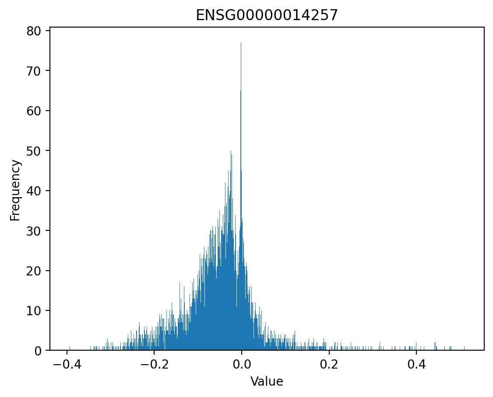
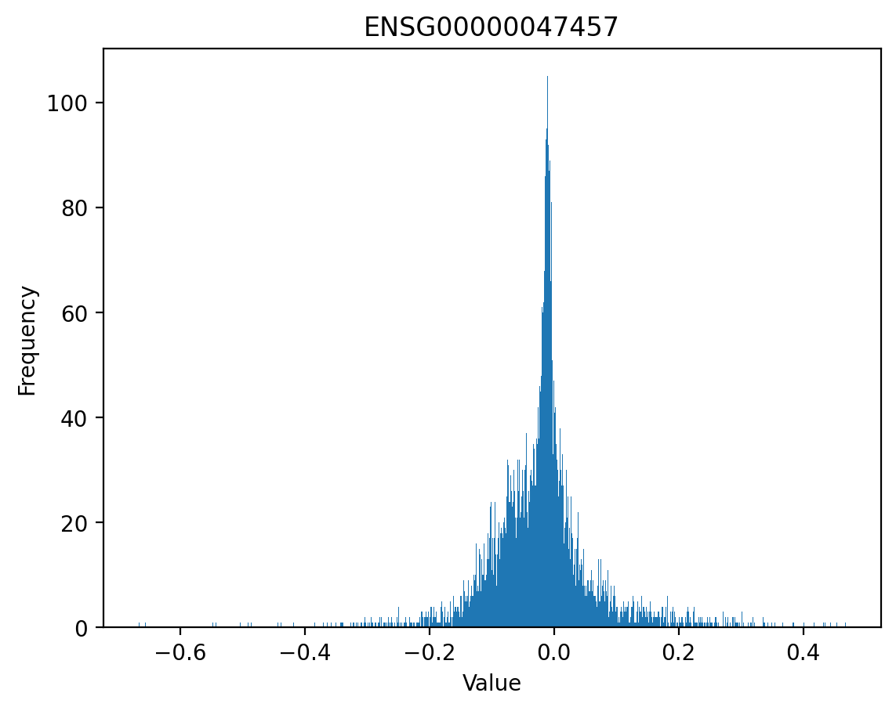
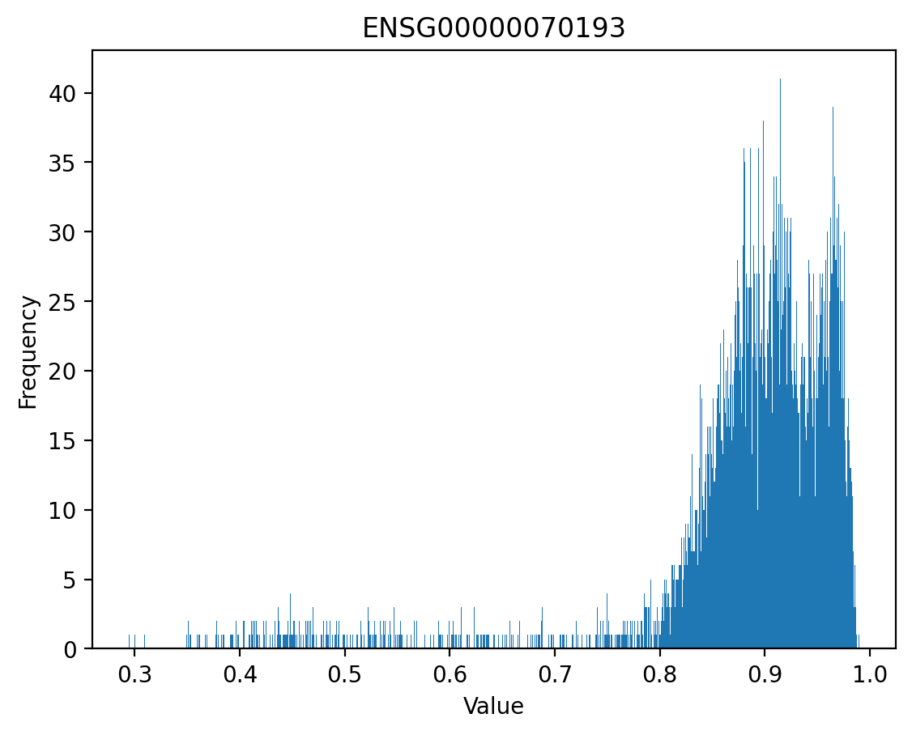
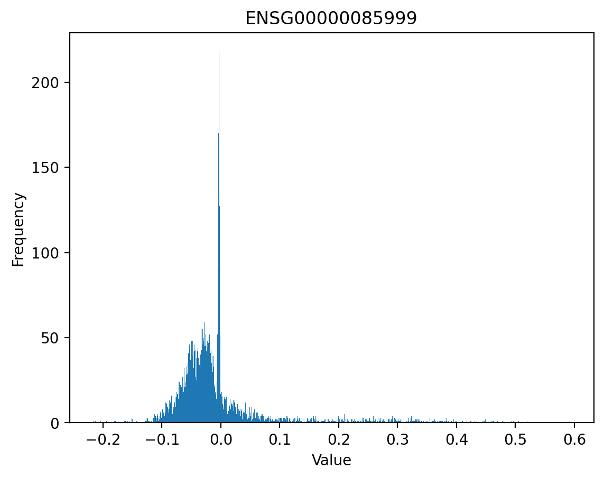
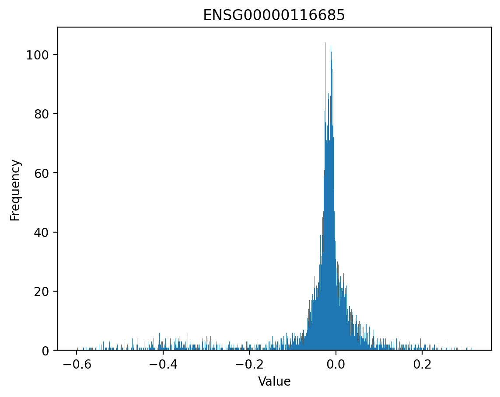
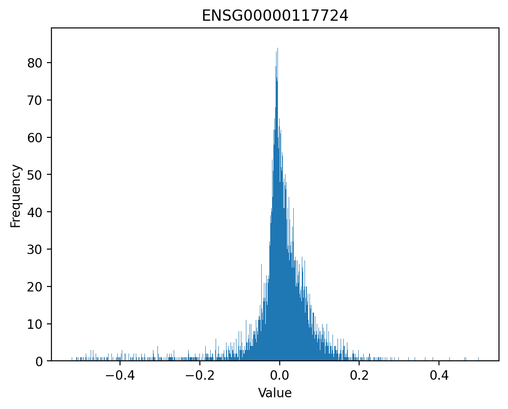
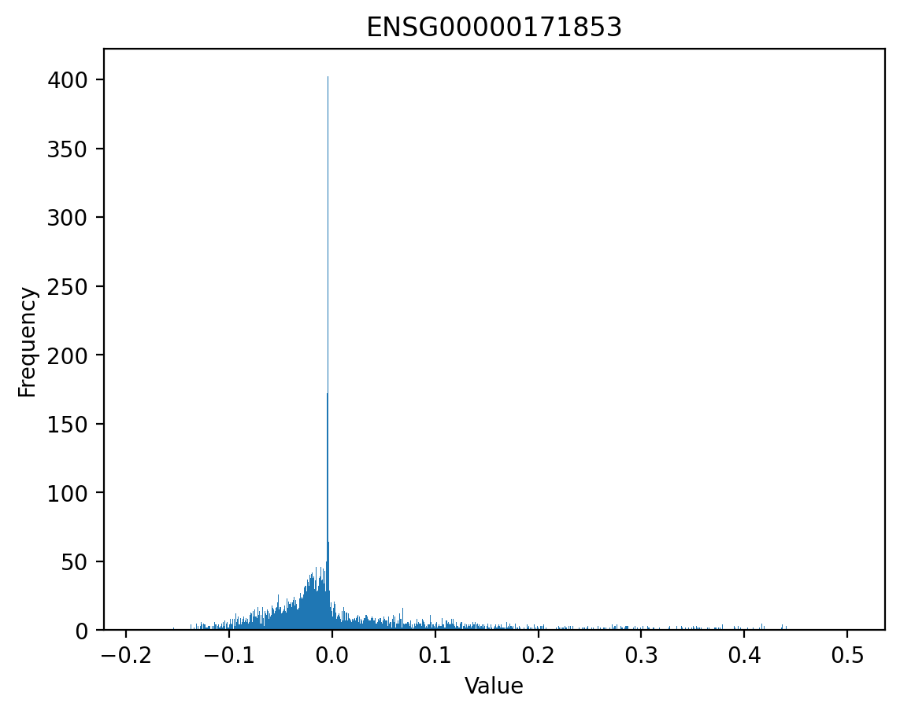
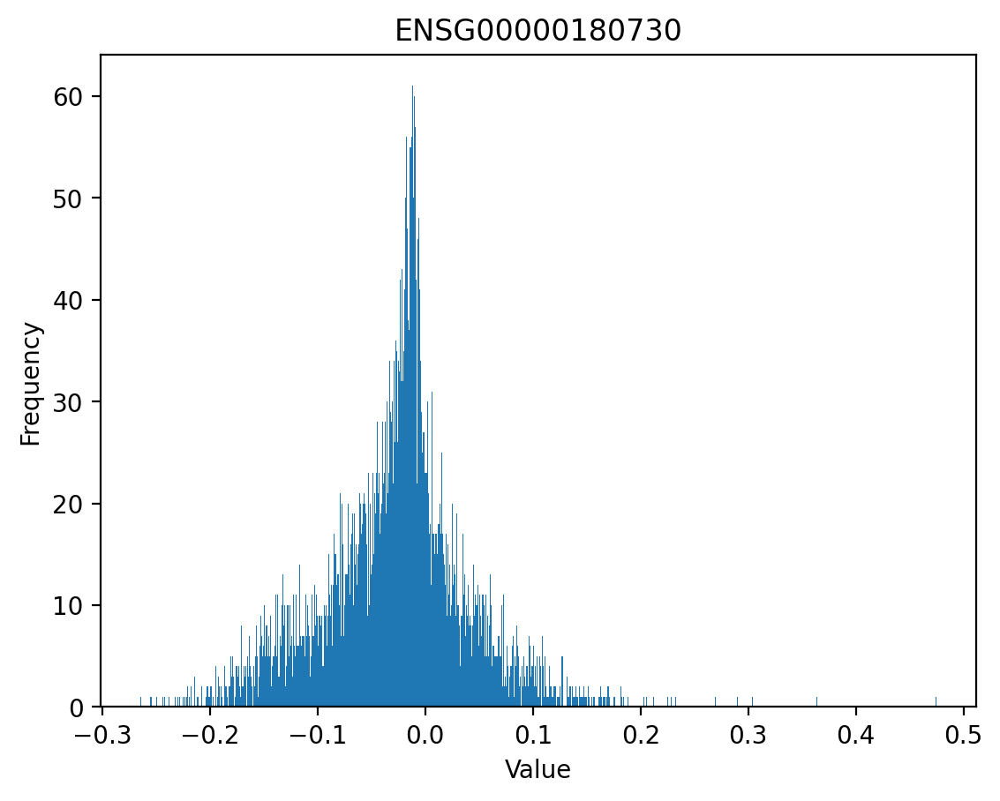
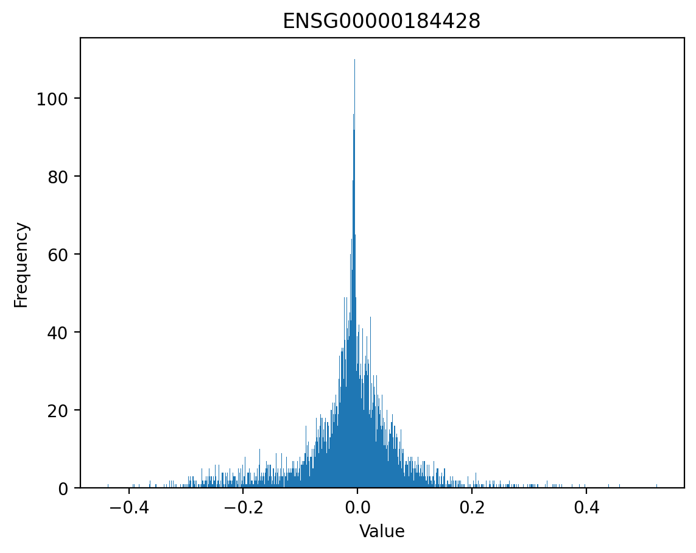
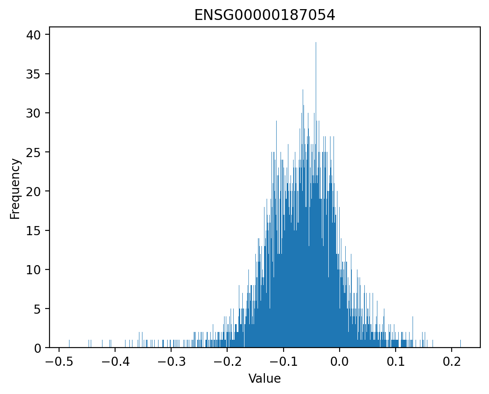
This is pretty bad. But we’ll still plot the brain CAGE tracks, in case the root of our problems is bin indexing.
def plot_CAGE_tracks(gene):
gene_annot = annot_df.loc[gene]
start = gene_annot['transcription_start_site'] - 57344
end = gene_annot['transcription_start_site'] + 57344
target_interval = kipoiseq.Interval(f"chr{gene_annot['chromosome_name']}", start, end)
tracks = {"Centered at TSS": tss_predictions[gene][:, 4980],
"Queried from reference": predicted_reference_epigenome[gene][:,4980]}
plot_tracks(tracks, target_interval)annot_df.head()| external_gene_name | chromosome_name | transcription_start_site | |
|---|---|---|---|
| ensembl_gene_id | |||
| ENSG00000142611 | PRDM16 | 1 | 3069203 |
| ENSG00000157911 | PEX10 | 1 | 2412564 |
| ENSG00000142655 | PEX14 | 1 | 10474950 |
| ENSG00000149527 | PLCH2 | 1 | 2476289 |
| ENSG00000171621 | SPSB1 | 1 | 9292894 |
for gene in tss_predictions.keys():
plot_CAGE_tracks(gene)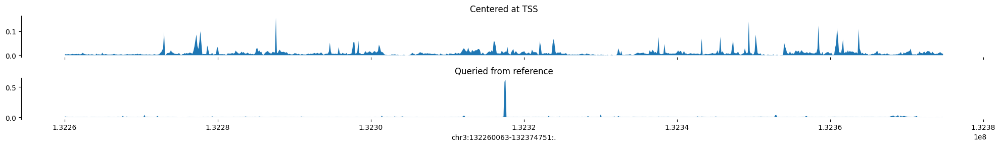
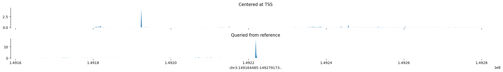
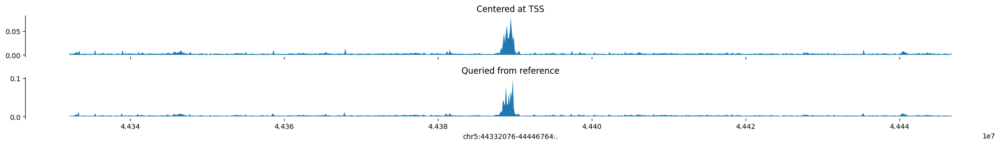
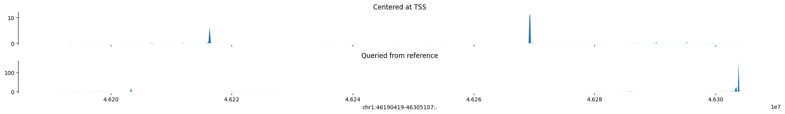

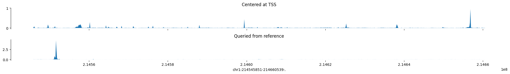
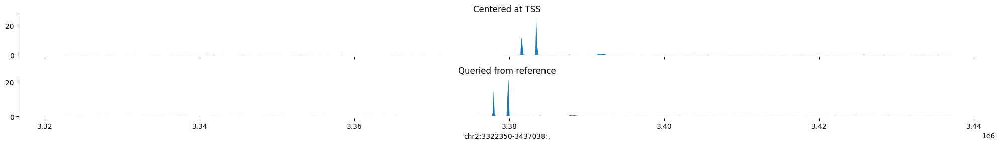
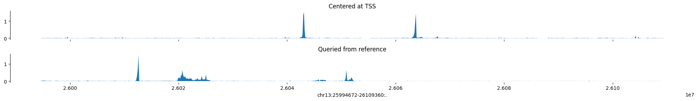
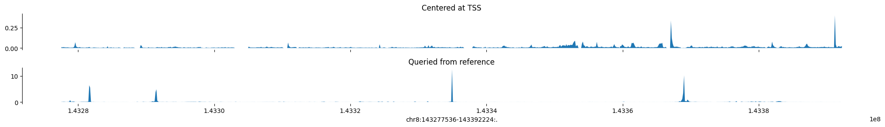
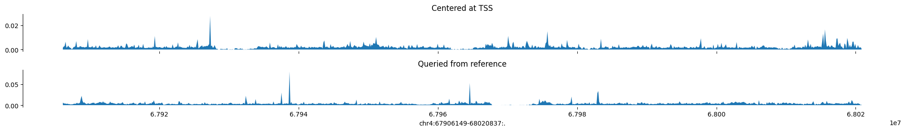